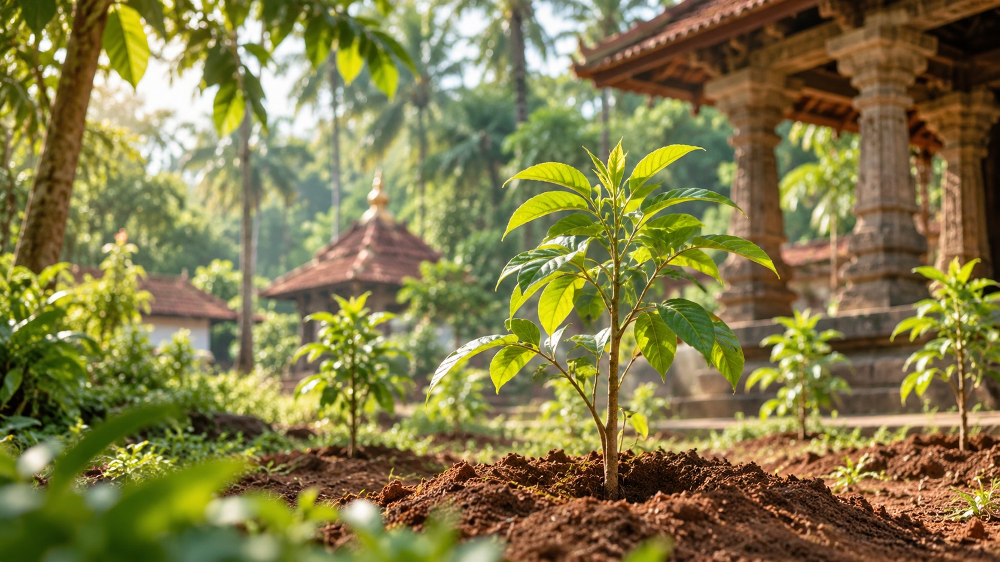
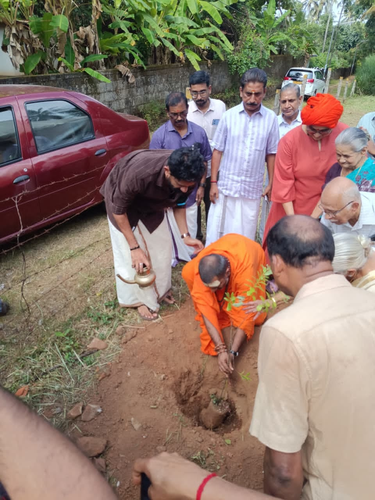

Spiritual Enrichment
Create sacred green spaces within temple premises that encourage devotion, tranquillity and appreciation of cultural heritage.
Sacred roots. Greener tomorrow. Prosperous future.
Prakriti Sanathan — Temple Sandalwood Heritage Plantation Mission
Join a sacred green initiative that brings together devotion, environmental care and a lasting legacy for future generations. The mission begins in Kerala, with a vision for temple communities across India.

A sacred green initiative
Seed Plant for Prosperity connects the spiritual heritage of our temples with our responsibility towards nature.
Temple communities are encouraged to develop dedicated sandalwood groves through planned planting, technical guidance and long-term care. Each grove is envisioned as a living heritage: a space that nurtures devotion, supports biodiversity and creates lasting value for the temple and its community.
By bringing together temple administrations, devotees, sponsors and technical experts, the initiative makes environmental service a shared act of devotion.

Back to the roots. Back to nature.
Prakriti Sanathan is an environmental and spiritual movement dedicated to restoring harmony between sacred spaces and nature. Its Temple Sandalwood Heritage Plantation Mission envisions temple landscapes where spiritual tradition and environmental responsibility grow together.
Under his guidance, the initiative seeks to establish sacred sandalwood groves that preserve our connection with nature and inspire future generations. The mission rests on a simple belief: caring for the earth is a meaningful form of service, devotion and responsibility.
Our Vision
To create a network of temple sandalwood groves across Kerala that promotes spirituality, environmental conservation and long-term sustainable value, and to develop a model that can inspire temple communities across India.
Create sacred green spaces within temple premises that encourage devotion, tranquillity and appreciation of cultural heritage.
Increase tree cover and support biodiversity, carbon sequestration and ecological restoration through well-managed plantations.
Nurture sandalwood groves as living assets that may create lasting value for temples and future generations.
Apply sound cultivation practices, host-plant integration and technical guidance to support healthy growth and sapling survival.
Enable devotees, sponsors, volunteers and well-wishers to contribute to a shared green legacy.
A tree rooted in our sacred traditions
Sandalwood (Santalum album) holds a special place in Hindu worship and cultural heritage. With suitable growing conditions and sustained care, a sandalwood grove can bring together spiritual significance, environmental benefits and potential long-term economic value.
Sacred significance Deeply tied to religious ritual and culture.
Heritage tree A valued part of our living traditions.
Temple-friendly Can be integrated into suitable temple landscapes.
Long-term potential Possible economic value over time.
Green cover Contributes to tree cover and biodiversity.
Lasting legacy A living gift to future generations.
Project Partner & Technical Implementation Agency
The project proposal identifies Marayoor Sandal Nursery as the technical and operational partner for establishing the plantations. Proposed support covers site evaluation, sapling supply, host-plant integration, plantation establishment, technical monitoring and training for temple representatives.
Premium Marayoor sandalwood saplings raised through scientific nursery practices. Certification documentation is to be confirmed during project planning.
Supply and establishment of suitable host plants to support healthy sandalwood development.
Evaluation of soil conditions and site suitability before plantation planning.
Support with layout, pit preparation, organic nutrient application and professional planting.
Guidance and monitoring through the critical establishment phase to identify maintenance needs and support healthy growth.
Basic training for temple representatives on plantation care, maintenance and management.
A practical foundation for a sacred grove
The project recommends a minimum plantation unit of 50 premium sandalwood saplings to support effective supervision and operational viability. Every plantation begins with a site assessment and a suitable plan for host plants, planting, maintenance and long-term management.
Request a Site Assessment →Nurturing value for future generations
The project proposal illustrates what a 50-sapling plantation could achieve under the following assumptions.
| Particulars | Proposal estimate |
|---|---|
| Sandalwood saplings planted | 50 |
| Estimated survival under recommended care | 90% |
| Expected mature trees | 45 |
| Estimated average heartwood yield | 15 kg per mature tree |
| Indicative value per mature tree | ₹4,00,000 |
| Illustrative total plantation value | ₹1,80,00,000 (approx. ₹1.8 crore) |
A sacred legacy that grows
How the project works
Identify a potential plantation area and obtain the temple administration’s approval to proceed with assessment.
Evaluate growing conditions and prepare a suitable plantation layout and establishment plan.
Arrange saplings and host plants, prepare the site and carry out planting.
Guide the establishment phase and help temple representatives understand ongoing care.
Continue plantation care and management to support healthy growth and preserve the grove for future generations.
Be part of the mission
Express your interest in establishing a sandalwood grove within your temple premises. Begin with a discussion about available land and project suitability.
Register Your Temple →Enquire about opportunities to support a participating temple’s plantation and its ongoing care.
Enquire About Sponsorship →Support awareness, community participation and plantation activities in coordination with the project team.
Become a Volunteer →Connect with the team to explore how your organisation or community can contribute to the mission.
Contact the Project Team →Frequently Asked Questions
A temple sandalwood plantation initiative connected with the Prakriti Sanathan movement, bringing together spirituality, environmental care and long-term heritage creation.
On suitable temple premises in Kerala, with a broader vision of inspiring similar initiatives across India.
The proposal recommends a unit of 50 sandalwood saplings, supported by suitable host plants and an appropriate care plan.
The proposal names Marayoor Sandal Nursery, Idukki, Kerala, as project partner and technical implementation agency.
Yes. Devotees can express interest in supporting plantations at participating temples. Speak to the project team about sponsorship arrangements and contribution details.
The proposal does not specify a participation fee or sponsorship amount. Contact the project team for a site-specific scope and quotation.
The proposal does not state a maturity timeline. Growth expectations and long-term management needs will be discussed with the technical team during planning.
No. The figures illustrate a possible outcome based on the proposal’s assumptions. Actual results and costs will vary.
For temples. For nature. For future generations.
A sapling planted today can become a living connection between faith, nature and the generations that follow. Join Seed Plant for Prosperity and help create temple landscapes that nurture devotion, protect nature and preserve a meaningful heritage.
Prakriti Sanathan · Back to the Roots. Back to Nature. · Pranan en Prakriti: Nature Is My Life Breath.